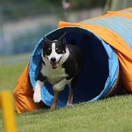
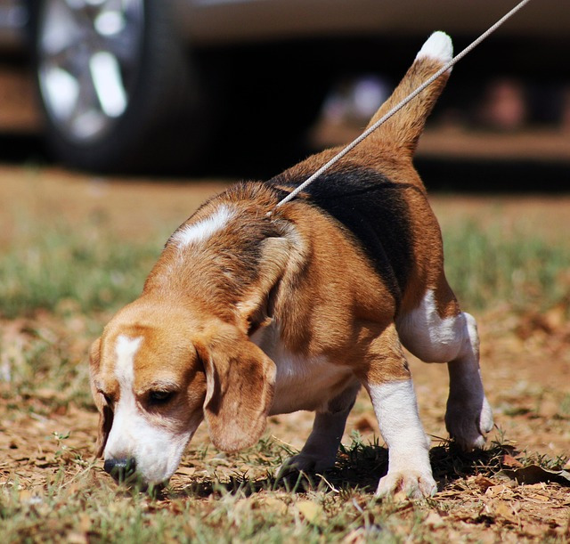
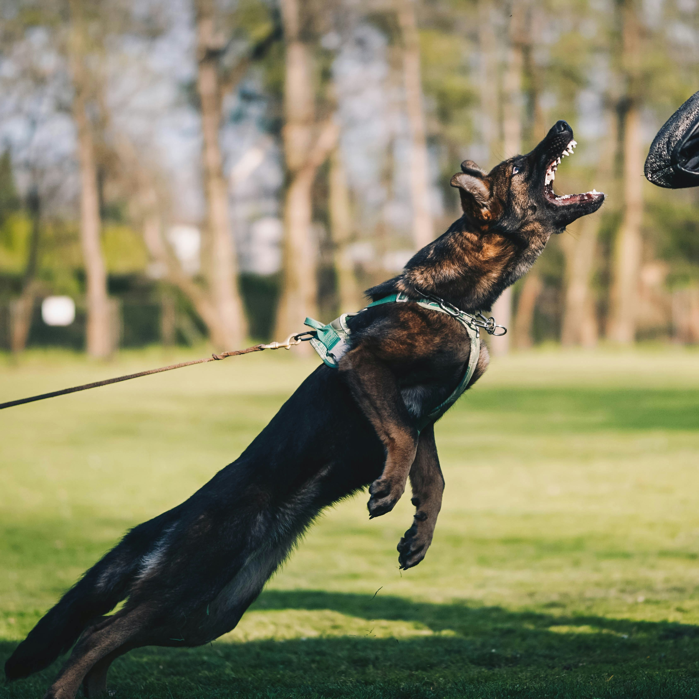

Dog sports we offer

Obedience - Dogs perform tasks on command, showcasing training and discipline.

Agility - Timed obstacle courses test a dog's speed, agility, and coordination.

Scentwork - Dogs locate scents, demonstrating their natural tracking abilities.

Protection - Trained dogs guard and defend, emphasizing control and responsiveness.